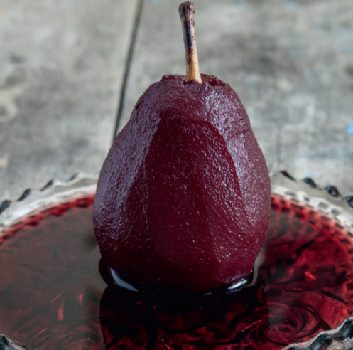

Война обошла стороной сказочно богатые земли Хайгардена. Гости под пение музыкантов и кувыркание акробатов приступили к грушам в вине…
«БИТВА КОРОЛЕЙ»
6 порций
Подготовка: 10 минут
Варка: 15–20 минут
Приготовление соуса: 15 минут
Это изысканный десерт. Карамельный соус теплый и тягучий, с едва ощутимым цитрусовым привкусом. У него вкус осени — бодрящих прохладой дней, проведенных в саду, и вечеров у костра.
- 2 апельсина
- 3 стакана сахара
- 6 крупных твердых груш, очищенных от кожуры, со срезанным основанием, чтобы грушу можно было поставить вертикально
- 1 стакан жирных сливок
- 2 – 3 ст. л. кальвадоса
- 2 ст. л. меда
- 1 2⁄3 стакана воды
- ванильное мороженое или еще немного жирных сливок для подачи

Оцените рецепт
★
★
★
★
★
Ваша оценка: 0/5
С апельсинов при помощи ножа для чистки овощей снимите цедру, выжмите из мякоти сок. В центр кастрюли насыпьте сахар — в достаточном объеме, чтобы он закрывал
груши. С краев подлейте мед и 2/3 стакана воды. Прогрейте на слабом огне, пока сахар
не разойдется, аккуратно помешивая деревянной ложкой. Перестаньте размешивать,
как только смесь слабо закипит. Если на стенках кастрюли начнут образовываться кристаллы сахара, смывайте их смоченной кистью для смазывания выпечки. Пока готовится карамельный сироп, доведите оставшийся стакан воды до кипения.
Когда карамель приобретет насыщенный янтарный цвет (10–15 минут), осторожно
(карамель брызгается!) влейте кипяток, добавьте цедру и сок апельсина и груши. Закройте крышкой и томите на слабом огне 15–20 минут до мягкости груш. Выньте груши и отложите.
Добавьте к сиропу сливки и кальвадос и продолжайте готовить, не накрывая крышкой, пока карамель не уварится до трети объема. Подавайте с ванильным мороженым
или полив небольшим количеством сливок.